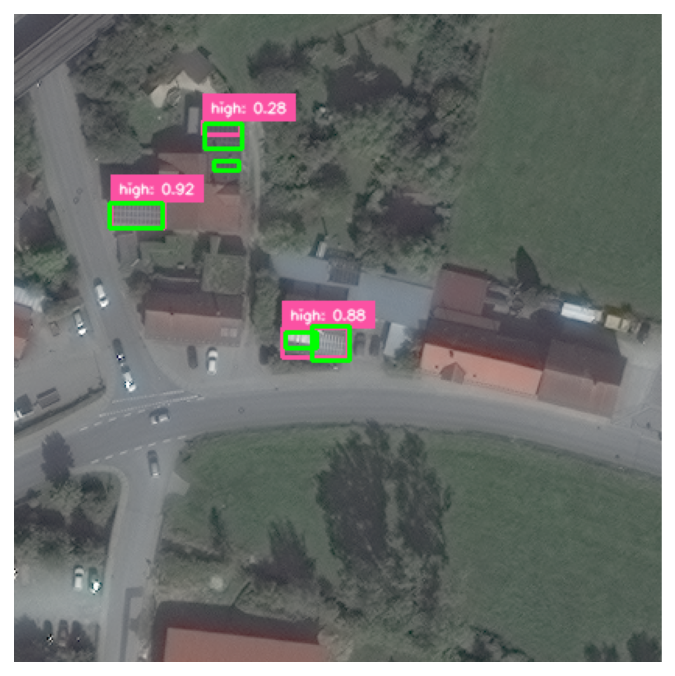
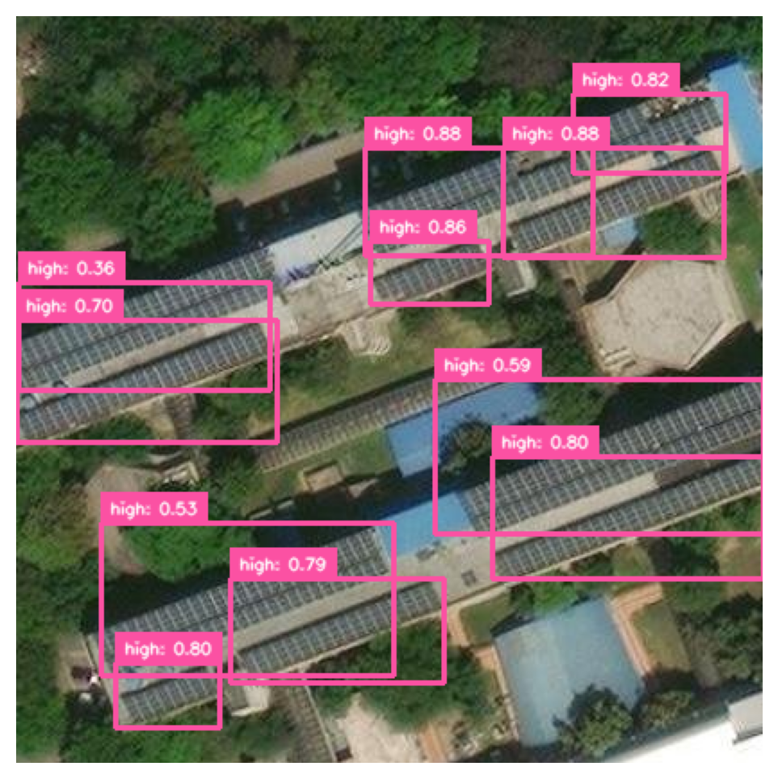

!pip install ultralytics
!pip install -U ipywidgets
!pip install supervision
!pip install roboflow
!pip install shapely
!pip install -U wandb
!yolo settings wandb=TrueFinal Split Dataset
Weights & Biases Training Report
import numpy as np
import matplotlib.pyplot as plt
import cv2
from roboflow import Roboflow
import supervision as sv
import pandas as pd
from ultralytics import YOLO
from PIL import Image
from shapely.geometry import box
from tqdm.notebook import tqdm
import seaborn as sns
import random
import glob
%matplotlib inline
%config InlineBackend.figure_format = 'retina'dataset_location = "/kaggle/input/satellite-aisg/data"import wandb
wandb.login(key="<API-KEY>")wandb: Using wandb-core as the SDK backend. Please refer to https://wandb.me/wandb-core for more information.
wandb: WARNING If you're specifying your api key in code, ensure this code is not shared publicly.
wandb: WARNING Consider setting the WANDB_API_KEY environment variable, or running `wandb login` from the command line.
wandb: No netrc file found, creating one.
wandb: Appending key for api.wandb.ai to your netrc file: /root/.netrc
wandb: Currently logged in as: digvijaysingh-parihar (digvijaysingh-parihar-iit-gandhinagar) to https://api.wandb.ai. Use `wandb login --relogin` to force reloginTruewandb.init(project = "FinalUltralytics", name = "YOLO11v")
Tracking run with wandb version 0.19.7
Run data is saved locally in
/kaggle/working/wandb/run-20250222_223314-26dbspcz
model = YOLO("yolo11m.pt")model.train(data = f"{dataset_location}/data.yaml", epochs = 50, imgsz = 640, batch = 16, workers = 4, device = 0, project = "FinalUltralytics", name = "YOLO11v")Ultralytics 8.3.78 üöÄ Python-3.10.12 torch-2.5.1+cu121 CUDA:0 (Tesla T4, 15095MiB)
engine/trainer: task=detect, mode=train, model=yolo11m.pt, data=/kaggle/input/satellite-aisg/data/data.yaml, epochs=50, time=None, patience=100, batch=16, imgsz=640, save=True, save_period=-1, cache=False, device=0, workers=4, project=FinalUltralytics, name=YOLO11v, exist_ok=False, pretrained=True, optimizer=auto, verbose=True, seed=0, deterministic=True, single_cls=False, rect=False, cos_lr=False, close_mosaic=10, resume=False, amp=True, fraction=1.0, profile=False, freeze=None, multi_scale=False, overlap_mask=True, mask_ratio=4, dropout=0.0, val=True, split=val, save_json=False, save_hybrid=False, conf=None, iou=0.7, max_det=300, half=False, dnn=False, plots=True, source=None, vid_stride=1, stream_buffer=False, visualize=False, augment=False, agnostic_nms=False, classes=None, retina_masks=False, embed=None, show=False, save_frames=False, save_txt=False, save_conf=False, save_crop=False, show_labels=True, show_conf=True, show_boxes=True, line_width=None, format=torchscript, keras=False, optimize=False, int8=False, dynamic=False, simplify=True, opset=None, workspace=None, nms=False, lr0=0.01, lrf=0.01, momentum=0.937, weight_decay=0.0005, warmup_epochs=3.0, warmup_momentum=0.8, warmup_bias_lr=0.1, box=7.5, cls=0.5, dfl=1.5, pose=12.0, kobj=1.0, nbs=64, hsv_h=0.015, hsv_s=0.7, hsv_v=0.4, degrees=0.0, translate=0.1, scale=0.5, shear=0.0, perspective=0.0, flipud=0.0, fliplr=0.5, bgr=0.0, mosaic=1.0, mixup=0.0, copy_paste=0.0, copy_paste_mode=flip, auto_augment=randaugment, erasing=0.4, crop_fraction=1.0, cfg=None, tracker=botsort.yaml, save_dir=FinalUltralytics/YOLO11v
Overriding model.yaml nc=80 with nc=3
from n params module arguments
0 -1 1 1856 ultralytics.nn.modules.conv.Conv [3, 64, 3, 2]
1 -1 1 73984 ultralytics.nn.modules.conv.Conv [64, 128, 3, 2]
2 -1 1 111872 ultralytics.nn.modules.block.C3k2 [128, 256, 1, True, 0.25]
3 -1 1 590336 ultralytics.nn.modules.conv.Conv [256, 256, 3, 2]
4 -1 1 444928 ultralytics.nn.modules.block.C3k2 [256, 512, 1, True, 0.25]
5 -1 1 2360320 ultralytics.nn.modules.conv.Conv [512, 512, 3, 2]
6 -1 1 1380352 ultralytics.nn.modules.block.C3k2 [512, 512, 1, True]
7 -1 1 2360320 ultralytics.nn.modules.conv.Conv [512, 512, 3, 2]
8 -1 1 1380352 ultralytics.nn.modules.block.C3k2 [512, 512, 1, True]
9 -1 1 656896 ultralytics.nn.modules.block.SPPF [512, 512, 5]
10 -1 1 990976 ultralytics.nn.modules.block.C2PSA [512, 512, 1]
11 -1 1 0 torch.nn.modules.upsampling.Upsample [None, 2, 'nearest']
12 [-1, 6] 1 0 ultralytics.nn.modules.conv.Concat [1]
13 -1 1 1642496 ultralytics.nn.modules.block.C3k2 [1024, 512, 1, True]
14 -1 1 0 torch.nn.modules.upsampling.Upsample [None, 2, 'nearest']
15 [-1, 4] 1 0 ultralytics.nn.modules.conv.Concat [1]
16 -1 1 542720 ultralytics.nn.modules.block.C3k2 [1024, 256, 1, True]
17 -1 1 590336 ultralytics.nn.modules.conv.Conv [256, 256, 3, 2]
18 [-1, 13] 1 0 ultralytics.nn.modules.conv.Concat [1]
19 -1 1 1511424 ultralytics.nn.modules.block.C3k2 [768, 512, 1, True]
20 -1 1 2360320 ultralytics.nn.modules.conv.Conv [512, 512, 3, 2]
21 [-1, 10] 1 0 ultralytics.nn.modules.conv.Concat [1]
22 -1 1 1642496 ultralytics.nn.modules.block.C3k2 [1024, 512, 1, True]
23 [16, 19, 22] 1 1413337 ultralytics.nn.modules.head.Detect [3, [256, 512, 512]]
YOLO11m summary: 231 layers, 20,055,321 parameters, 20,055,305 gradients, 68.2 GFLOPs
Transferred 643/649 items from pretrained weights
TensorBoard: Start with 'tensorboard --logdir FinalUltralytics/YOLO11v', view at http://localhost:6006/
Freezing layer 'model.23.dfl.conv.weight'
AMP: running Automatic Mixed Precision (AMP) checks...
AMP: checks passed ✅
train: WARNING ⚠️ Cache directory /kaggle/input/satellite-aisg/data/train is not writeable, cache not saved.
albumentations: Blur(p=0.01, blur_limit=(3, 7)), MedianBlur(p=0.01, blur_limit=(3, 7)), ToGray(p=0.01, num_output_channels=3, method='weighted_average'), CLAHE(p=0.01, clip_limit=(1.0, 4.0), tile_grid_size=(8, 8))
val: WARNING ⚠️ Cache directory /kaggle/input/satellite-aisg/data/val is not writeable, cache not saved.
Plotting labels to FinalUltralytics/YOLO11v/labels.jpg...
optimizer: 'optimizer=auto' found, ignoring 'lr0=0.01' and 'momentum=0.937' and determining best 'optimizer', 'lr0' and 'momentum' automatically...
optimizer: AdamW(lr=0.001429, momentum=0.9) with parameter groups 106 weight(decay=0.0), 113 weight(decay=0.0005), 112 bias(decay=0.0)
TensorBoard: model graph visualization added ✅
Image sizes 640 train, 640 val
Using 4 dataloader workers
Logging results to FinalUltralytics/YOLO11v
Starting training for 50 epochs...
Epoch GPU_mem box_loss cls_loss dfl_loss Instances Size
all 203 2232 0.549 0.249 0.239 0.15
Epoch GPU_mem box_loss cls_loss dfl_loss Instances Size
all 203 2232 0.422 0.252 0.0812 0.0468
Epoch GPU_mem box_loss cls_loss dfl_loss Instances Size
all 203 2232 0.924 0.271 0.376 0.234
Epoch GPU_mem box_loss cls_loss dfl_loss Instances Size
all 203 2232 0.748 0.356 0.384 0.253
Epoch GPU_mem box_loss cls_loss dfl_loss Instances Size
all 203 2232 0.739 0.456 0.547 0.381
Epoch GPU_mem box_loss cls_loss dfl_loss Instances Size
all 203 2232 0.661 0.425 0.42 0.279
Epoch GPU_mem box_loss cls_loss dfl_loss Instances Size
all 203 2232 0.481 0.474 0.489 0.335
Epoch GPU_mem box_loss cls_loss dfl_loss Instances Size
all 203 2232 0.942 0.468 0.594 0.405
Epoch GPU_mem box_loss cls_loss dfl_loss Instances Size
all 203 2232 0.9 0.522 0.572 0.387
Epoch GPU_mem box_loss cls_loss dfl_loss Instances Size
all 203 2232 0.737 0.606 0.626 0.413
Epoch GPU_mem box_loss cls_loss dfl_loss Instances Size
all 203 2232 0.563 0.581 0.603 0.401
Epoch GPU_mem box_loss cls_loss dfl_loss Instances Size
all 203 2232 0.86 0.645 0.733 0.523
Epoch GPU_mem box_loss cls_loss dfl_loss Instances Size
all 203 2232 0.749 0.68 0.714 0.532
Epoch GPU_mem box_loss cls_loss dfl_loss Instances Size
all 203 2232 0.806 0.737 0.733 0.555
Epoch GPU_mem box_loss cls_loss dfl_loss Instances Size
all 203 2232 0.926 0.721 0.761 0.558
Epoch GPU_mem box_loss cls_loss dfl_loss Instances Size
all 203 2232 0.903 0.719 0.783 0.598
Epoch GPU_mem box_loss cls_loss dfl_loss Instances Size
all 203 2232 0.873 0.624 0.716 0.546
Epoch GPU_mem box_loss cls_loss dfl_loss Instances Size
all 203 2232 0.87 0.722 0.819 0.614
Epoch GPU_mem box_loss cls_loss dfl_loss Instances Size
all 203 2232 0.841 0.72 0.767 0.563
Epoch GPU_mem box_loss cls_loss dfl_loss Instances Size
all 203 2232 0.954 0.715 0.79 0.603
Epoch GPU_mem box_loss cls_loss dfl_loss Instances Size
all 203 2232 0.905 0.743 0.774 0.628
Epoch GPU_mem box_loss cls_loss dfl_loss Instances Size
all 203 2232 0.913 0.766 0.78 0.628
Epoch GPU_mem box_loss cls_loss dfl_loss Instances Size
all 203 2232 0.92 0.705 0.783 0.628
Epoch GPU_mem box_loss cls_loss dfl_loss Instances Size
all 203 2232 0.95 0.734 0.8 0.647
Epoch GPU_mem box_loss cls_loss dfl_loss Instances Size
all 203 2232 0.97 0.769 0.829 0.649
Epoch GPU_mem box_loss cls_loss dfl_loss Instances Size
all 203 2232 0.961 0.743 0.784 0.643
Epoch GPU_mem box_loss cls_loss dfl_loss Instances Size
all 203 2232 0.958 0.74 0.818 0.648
Epoch GPU_mem box_loss cls_loss dfl_loss Instances Size
all 203 2232 0.981 0.805 0.861 0.689
Epoch GPU_mem box_loss cls_loss dfl_loss Instances Size
all 203 2232 0.963 0.793 0.839 0.682
Epoch GPU_mem box_loss cls_loss dfl_loss Instances Size
all 203 2232 0.963 0.747 0.87 0.708
Epoch GPU_mem box_loss cls_loss dfl_loss Instances Size
all 203 2232 0.949 0.848 0.909 0.726
Epoch GPU_mem box_loss cls_loss dfl_loss Instances Size
all 203 2232 0.988 0.801 0.847 0.703
Epoch GPU_mem box_loss cls_loss dfl_loss Instances Size
all 203 2232 0.982 0.822 0.876 0.742
Epoch GPU_mem box_loss cls_loss dfl_loss Instances Size
all 203 2232 0.948 0.755 0.829 0.71
Epoch GPU_mem box_loss cls_loss dfl_loss Instances Size
all 203 2232 0.985 0.804 0.873 0.726
Epoch GPU_mem box_loss cls_loss dfl_loss Instances Sizetrain: Scanning /kaggle/input/satellite-aisg/data/train/labels... 1831 images, 0 backgrounds, 0 corrupt: 100%|██████████| 1831/1831 [00:02<00:00, 720.84it/s]
val: Scanning /kaggle/input/satellite-aisg/data/val/labels... 203 images, 0 backgrounds, 0 corrupt: 100%|██████████| 203/203 [00:00<00:00, 313.35it/s]
1/50 9.24G 1.457 1.458 1.279 164 640: 100%|██████████| 115/115 [01:09<00:00, 1.65it/s]
Class Images Instances Box(P R mAP50 mAP50-95): 100%|██████████| 7/7 [00:04<00:00, 1.72it/s]
2/50 8.63G 1.3 0.9228 1.161 135 640: 100%|██████████| 115/115 [01:15<00:00, 1.53it/s]
Class Images Instances Box(P R mAP50 mAP50-95): 100%|██████████| 7/7 [00:03<00:00, 1.84it/s]
3/50 8.53G 1.249 0.8702 1.151 210 640: 100%|██████████| 115/115 [01:14<00:00, 1.55it/s]
Class Images Instances Box(P R mAP50 mAP50-95): 100%|██████████| 7/7 [00:03<00:00, 1.92it/s]
4/50 8.79G 1.222 0.8092 1.13 167 640: 100%|██████████| 115/115 [01:14<00:00, 1.55it/s]
Class Images Instances Box(P R mAP50 mAP50-95): 100%|██████████| 7/7 [00:03<00:00, 1.95it/s]
5/50 8.54G 1.157 0.7759 1.096 106 640: 100%|██████████| 115/115 [01:14<00:00, 1.55it/s]
Class Images Instances Box(P R mAP50 mAP50-95): 100%|██████████| 7/7 [00:03<00:00, 1.93it/s]
6/50 8.7G 1.104 0.7101 1.07 144 640: 100%|██████████| 115/115 [01:14<00:00, 1.55it/s]
Class Images Instances Box(P R mAP50 mAP50-95): 100%|██████████| 7/7 [00:03<00:00, 1.94it/s]
7/50 8.56G 1.072 0.6872 1.061 74 640: 100%|██████████| 115/115 [01:13<00:00, 1.56it/s]
Class Images Instances Box(P R mAP50 mAP50-95): 100%|██████████| 7/7 [00:03<00:00, 1.94it/s]
8/50 8.7G 1.069 0.6731 1.055 164 640: 100%|██████████| 115/115 [01:13<00:00, 1.56it/s]
Class Images Instances Box(P R mAP50 mAP50-95): 100%|██████████| 7/7 [00:03<00:00, 1.96it/s]
9/50 8.78G 1.038 0.6518 1.037 109 640: 100%|██████████| 115/115 [01:14<00:00, 1.55it/s]
Class Images Instances Box(P R mAP50 mAP50-95): 100%|██████████| 7/7 [00:03<00:00, 1.97it/s]
10/50 8.55G 1.004 0.613 1.022 126 640: 100%|██████████| 115/115 [01:13<00:00, 1.56it/s]
Class Images Instances Box(P R mAP50 mAP50-95): 100%|██████████| 7/7 [00:03<00:00, 1.99it/s]
11/50 8.53G 0.9817 0.5974 1.021 125 640: 100%|██████████| 115/115 [01:13<00:00, 1.56it/s]
Class Images Instances Box(P R mAP50 mAP50-95): 100%|██████████| 7/7 [00:03<00:00, 1.92it/s]
12/50 8.86G 0.9693 0.5919 1.01 118 640: 100%|██████████| 115/115 [01:13<00:00, 1.56it/s]
Class Images Instances Box(P R mAP50 mAP50-95): 100%|██████████| 7/7 [00:03<00:00, 1.99it/s]
13/50 8.52G 0.9407 0.572 1 310 640: 100%|██████████| 115/115 [01:13<00:00, 1.56it/s]
Class Images Instances Box(P R mAP50 mAP50-95): 100%|██████████| 7/7 [00:03<00:00, 1.99it/s]
14/50 8.62G 0.9273 0.5611 0.9932 142 640: 100%|██████████| 115/115 [01:14<00:00, 1.55it/s]
Class Images Instances Box(P R mAP50 mAP50-95): 100%|██████████| 7/7 [00:03<00:00, 1.98it/s]
15/50 8.58G 0.9183 0.5411 0.987 101 640: 100%|██████████| 115/115 [01:13<00:00, 1.57it/s]
Class Images Instances Box(P R mAP50 mAP50-95): 100%|██████████| 7/7 [00:03<00:00, 1.97it/s]
16/50 8.71G 0.8901 0.532 0.9788 128 640: 100%|██████████| 115/115 [01:13<00:00, 1.56it/s]
Class Images Instances Box(P R mAP50 mAP50-95): 100%|██████████| 7/7 [00:03<00:00, 1.98it/s]
17/50 8.54G 0.8703 0.5244 0.975 136 640: 100%|██████████| 115/115 [01:13<00:00, 1.57it/s]
Class Images Instances Box(P R mAP50 mAP50-95): 100%|██████████| 7/7 [00:03<00:00, 1.99it/s]
18/50 8.76G 0.8674 0.5111 0.9688 142 640: 100%|██████████| 115/115 [01:13<00:00, 1.56it/s]
Class Images Instances Box(P R mAP50 mAP50-95): 100%|██████████| 7/7 [00:03<00:00, 1.98it/s]
19/50 8.54G 0.8221 0.4864 0.9492 121 640: 100%|██████████| 115/115 [01:13<00:00, 1.56it/s]
Class Images Instances Box(P R mAP50 mAP50-95): 100%|██████████| 7/7 [00:03<00:00, 1.97it/s]
20/50 8.54G 0.8086 0.4847 0.9446 122 640: 100%|██████████| 115/115 [01:13<00:00, 1.56it/s]
Class Images Instances Box(P R mAP50 mAP50-95): 100%|██████████| 7/7 [00:03<00:00, 1.99it/s]
21/50 8.93G 0.7948 0.4774 0.943 137 640: 100%|██████████| 115/115 [01:13<00:00, 1.56it/s]
Class Images Instances Box(P R mAP50 mAP50-95): 100%|██████████| 7/7 [00:03<00:00, 1.99it/s]
22/50 8.51G 0.7927 0.474 0.947 152 640: 100%|██████████| 115/115 [01:13<00:00, 1.56it/s]
Class Images Instances Box(P R mAP50 mAP50-95): 100%|██████████| 7/7 [00:03<00:00, 1.98it/s]
23/50 8.82G 0.7714 0.4669 0.9363 230 640: 100%|██████████| 115/115 [01:13<00:00, 1.56it/s]
Class Images Instances Box(P R mAP50 mAP50-95): 100%|██████████| 7/7 [00:03<00:00, 1.98it/s]
24/50 8.55G 0.77 0.4663 0.9403 168 640: 100%|██████████| 115/115 [01:13<00:00, 1.56it/s]
Class Images Instances Box(P R mAP50 mAP50-95): 100%|██████████| 7/7 [00:03<00:00, 1.96it/s]
25/50 8.52G 0.7492 0.4512 0.9302 174 640: 100%|██████████| 115/115 [01:13<00:00, 1.56it/s]
Class Images Instances Box(P R mAP50 mAP50-95): 100%|██████████| 7/7 [00:03<00:00, 1.98it/s]
26/50 8.82G 0.7376 0.4444 0.925 230 640: 100%|██████████| 115/115 [01:13<00:00, 1.56it/s]
Class Images Instances Box(P R mAP50 mAP50-95): 100%|██████████| 7/7 [00:03<00:00, 1.96it/s]
27/50 8.79G 0.7184 0.4389 0.9207 175 640: 100%|██████████| 115/115 [01:13<00:00, 1.56it/s]
Class Images Instances Box(P R mAP50 mAP50-95): 100%|██████████| 7/7 [00:03<00:00, 1.98it/s]
28/50 8.88G 0.7015 0.4278 0.9164 137 640: 100%|██████████| 115/115 [01:13<00:00, 1.56it/s]
Class Images Instances Box(P R mAP50 mAP50-95): 100%|██████████| 7/7 [00:03<00:00, 1.98it/s]
29/50 8.64G 0.6932 0.4209 0.9117 115 640: 100%|██████████| 115/115 [01:13<00:00, 1.56it/s]
Class Images Instances Box(P R mAP50 mAP50-95): 100%|██████████| 7/7 [00:03<00:00, 1.97it/s]
30/50 8.73G 0.671 0.4141 0.9089 68 640: 100%|██████████| 115/115 [01:13<00:00, 1.55it/s]
Class Images Instances Box(P R mAP50 mAP50-95): 100%|██████████| 7/7 [00:03<00:00, 1.99it/s]
31/50 8.54G 0.6711 0.4114 0.9024 166 640: 100%|██████████| 115/115 [01:13<00:00, 1.56it/s]
Class Images Instances Box(P R mAP50 mAP50-95): 100%|██████████| 7/7 [00:03<00:00, 1.99it/s]
32/50 8.84G 0.6485 0.3991 0.8974 103 640: 100%|██████████| 115/115 [01:13<00:00, 1.56it/s]
Class Images Instances Box(P R mAP50 mAP50-95): 100%|██████████| 7/7 [00:03<00:00, 1.97it/s]
33/50 8.67G 0.6343 0.3919 0.8965 86 640: 100%|██████████| 115/115 [01:13<00:00, 1.57it/s]
Class Images Instances Box(P R mAP50 mAP50-95): 100%|██████████| 7/7 [00:03<00:00, 1.99it/s]
34/50 8.59G 0.6484 0.3989 0.8985 121 640: 100%|██████████| 115/115 [01:13<00:00, 1.56it/s]
Class Images Instances Box(P R mAP50 mAP50-95): 100%|██████████| 7/7 [00:03<00:00, 1.99it/s]
35/50 8.8G 0.6263 0.3911 0.892 127 640: 100%|██████████| 115/115 [01:13<00:00, 1.56it/s]
Class Images Instances Box(P R mAP50 mAP50-95): 100%|██████████| 7/7 [00:03<00:00, 1.99it/s]
36/50 8.75G 0.6276 0.3914 0.8976 257 640: 36%|███▌ | 41/115 [00:26<00:47, 1.55it/s]Getting to know SuperVision
poor documention, refer code
results = model("/kaggle/input/satellite-aisg/data/test/images/solarpanels_native_1__x0_4766_y0_12968_dxdy_416.tif")len(results), results[0]results[0].boxesresult = results[0]
boxes = result.boxes.xyxy.cpu().numpy()
scores = result.boxes.conf.cpu().numpy()
labels = result.boxes.cls.cpu().numpy().astype(int)
img = result.orig_img
sv_det = sv.Detections(
xyxy=boxes,
confidence=scores,
class_id=labels)
class_ids = {0: 'high', 1: 'moderate', 2: 'low'}
sv_det.data["class_name"] = np.array([f"{class_ids[sv_det.class_id[i]]}: {sv_det.confidence[i]:.2f}" for i in range(len(sv_det.class_id))])
sv_detbounding_box_annotator = sv.BoxAnnotator()
annotated_img = bounding_box_annotator.annotate(
scene=img.copy(),
detections=sv_det
)
plt.imshow(annotated_img)label_annotator = sv.LabelAnnotator(text_scale=0.3, smart_position = True)
label_annotated_img = label_annotator.annotate(annotated_img, sv_det)
plt.imshow(label_annotated_img)Loading Saved Model (A Demo)
# Paste this from the WANDB Artifact Segment
run = wandb.init()
artifact = run.use_artifact('<artificat-location>', type='model')
artifact_dir = artifact.download()
Tracking run with wandb version 0.19.7
Run data is saved locally in
/kaggle/working/wandb/run-20250224_092230-t9notxvw
wandb: 1 of 1 files downloaded. model = YOLO(f"{artifact_dir}/best.pt")Predict solar panels using the trained model
def give_image(fileIm, model, fileLb = None):
im = Image.open(fileIm)
im = np.array(im)
results = model(fileIm)
data_pred = []
for result in results:
boxes = result.boxes.xyxy.cpu().numpy()
scores = result.boxes.conf.cpu().numpy()
labels = result.boxes.cls.cpu().numpy().astype(int)
sv_det = sv.Detections(
xyxy=boxes,
confidence=scores,
class_id=labels)
class_ids = {0: 'high', 1: 'moderate', 2: 'low'}
sv_det.data["class_name"] = np.array([f"{class_ids[sv_det.class_id[i]]}: {sv_det.confidence[i]:.2f}" for i in range(len(sv_det.class_id))])
bounding_box_annotator = sv.BoxAnnotator()
annotated_img = bounding_box_annotator.annotate(
scene=im.copy(),
detections=sv_det
)
label_annotator = sv.LabelAnnotator(text_scale=0.3, text_padding = 5, smart_position = True)
annotated_img = label_annotator.annotate(annotated_img, sv_det)
for (box, conf, class_id) in zip(boxes, scores, labels):
x1, y1, x2, y2 = map(int, box)
data_pred.append((class_id, (x1, y1), (x2, y2), conf))
data_pred = sorted(data_pred)
if fileLb:
with open(fileLb, 'r') as f:
lines = f.readlines()
data_org = []
for line in lines:
line = line.strip().split()
class_id, x_center, y_center, width, height = map(float, line)
x_center, y_center = int(x_center * im.shape[1]), int(y_center * im.shape[0])
width, height = int(width * im.shape[1]), int(height * im.shape[0])
x1, y1 = x_center - width // 2, y_center - height // 2
x2, y2 = x_center + width // 2, y_center + height // 2
if class_id == 0:
cv2.rectangle(annotated_img, (x1, y1), (x2, y2), (0, 255, 0), 2)
elif class_id == 1:
cv2.rectangle(annotated_img, (x1, y1), (x2, y2), (0, 0, 255), 2)
elif class_id == 2:
cv2.rectangle(annotated_img, (x1, y1), (x2, y2), (255, 0, 0), 2)
data_org.append((class_id, (x1, y1), (x2, y2)))
data_org = sorted(data_org)
print("=================Original=================")
for i, data in enumerate(data_org):
print(i, ": ", data)
print("\n=================Prediction=================")
for i, data in enumerate(data_pred):
print(i, ": ", data)
plt.figure(figsize=(6, 6))
plt.imshow(annotated_img)
plt.axis('off')
plt.show()test_images = glob.glob(f"{dataset_location}/test/images/*.tif")
random_samples = random.sample(test_images, 4)
for img_path in random_samples:
label_path = img_path.replace("images", "labels").replace(".tif", ".txt")
give_image(img_path, model, label_path)
image 1/1 /kaggle/input/satellite-aisg/data/test/images/solarpanels_native_3__x0_10185_y0_9767_dxdy_416.tif: 640x640 43 highs, 36.9ms
Speed: 3.1ms preprocess, 36.9ms inference, 2.0ms postprocess per image at shape (1, 3, 640, 640)
=================Original=================
0 : (0.0, (0, 312), (18, 374))
1 : (0.0, (0, 391), (58, 415))
2 : (0.0, (13, 362), (101, 416))
3 : (0.0, (27, 280), (153, 416))
4 : (0.0, (29, 355), (119, 415))
5 : (0.0, (58, 263), (198, 415))
6 : (0.0, (121, 226), (173, 282))
7 : (0.0, (157, 200), (211, 256))
8 : (0.0, (176, 269), (210, 309))
9 : (0.0, (188, 264), (218, 302))
10 : (0.0, (199, 177), (251, 233))
11 : (0.0, (203, 311), (243, 365))
12 : (0.0, (214, 302), (258, 358))
13 : (0.0, (218, 246), (248, 284))
14 : (0.0, (227, 237), (259, 277))
15 : (0.0, (234, 361), (266, 397))
16 : (0.0, (237, 287), (283, 341))
17 : (0.0, (238, 154), (282, 208))
18 : (0.0, (247, 351), (279, 389))
19 : (0.0, (252, 278), (296, 330))
20 : (0.0, (257, 221), (287, 259))
21 : (0.0, (265, 212), (301, 252))
22 : (0.0, (271, 335), (303, 375))
23 : (0.0, (275, 262), (321, 318))
24 : (0.0, (281, 202), (311, 244))
25 : (0.0, (284, 328), (316, 364))
26 : (0.0, (292, 253), (336, 309))
27 : (0.0, (306, 242), (348, 298))
28 : (0.0, (308, 188), (342, 224))
29 : (0.0, (310, 310), (342, 348))
30 : (0.0, (319, 179), (349, 219))
31 : (0.0, (324, 301), (358, 341))
32 : (0.0, (331, 228), (375, 282))
33 : (0.0, (337, 294), (373, 330))
34 : (0.0, (344, 219), (388, 273))
35 : (0.0, (348, 163), (380, 201))
36 : (0.0, (358, 157), (386, 195))
37 : (0.0, (362, 276), (398, 316))
38 : (0.0, (368, 204), (412, 260))
39 : (0.0, (376, 267), (410, 307))
40 : (0.0, (382, 197), (416, 249))
41 : (0.0, (400, 259), (416, 293))
=================Prediction=================
0 : (0, (0, 281), (20, 373), 0.30878797)
1 : (0, (0, 308), (19, 374), 0.6124165)
2 : (0, (0, 384), (58, 415), 0.46623358)
3 : (0, (13, 362), (79, 415), 0.69142836)
4 : (0, (28, 279), (147, 416), 0.91060656)
5 : (0, (29, 353), (107, 415), 0.8033914)
6 : (0, (55, 263), (197, 416), 0.9356797)
7 : (0, (120, 226), (173, 283), 0.949125)
8 : (0, (159, 200), (212, 256), 0.9613254)
9 : (0, (176, 268), (210, 309), 0.9556042)
10 : (0, (188, 263), (218, 301), 0.9557023)
11 : (0, (198, 176), (250, 232), 0.956405)
12 : (0, (203, 311), (243, 365), 0.95102715)
13 : (0, (214, 301), (259, 358), 0.9547617)
14 : (0, (217, 246), (248, 283), 0.94844615)
15 : (0, (226, 236), (259, 278), 0.9536938)
16 : (0, (233, 360), (266, 397), 0.95684737)
17 : (0, (237, 286), (282, 342), 0.9524979)
18 : (0, (238, 153), (282, 207), 0.9426275)
19 : (0, (246, 351), (278, 390), 0.95099145)
20 : (0, (252, 277), (296, 331), 0.94632125)
21 : (0, (256, 220), (288, 259), 0.9506693)
22 : (0, (265, 211), (301, 252), 0.95992774)
23 : (0, (270, 335), (302, 375), 0.94975764)
24 : (0, (274, 262), (322, 317), 0.9417244)
25 : (0, (281, 201), (310, 244), 0.951552)
26 : (0, (283, 327), (316, 365), 0.94701815)
27 : (0, (291, 252), (337, 309), 0.9469555)
28 : (0, (306, 241), (348, 298), 0.95069873)
29 : (0, (307, 188), (341, 225), 0.95270604)
30 : (0, (309, 309), (341, 348), 0.9534724)
31 : (0, (318, 178), (348, 219), 0.9505675)
32 : (0, (323, 300), (357, 340), 0.9519473)
33 : (0, (331, 228), (375, 282), 0.9474841)
34 : (0, (336, 293), (372, 331), 0.9512042)
35 : (0, (344, 218), (388, 272), 0.95065045)
36 : (0, (347, 162), (379, 201), 0.93975514)
37 : (0, (357, 156), (387, 195), 0.9470209)
38 : (0, (361, 276), (397, 316), 0.95710367)
39 : (0, (368, 203), (412, 259), 0.9515115)
40 : (0, (375, 266), (411, 306), 0.95357144)
41 : (0, (382, 196), (416, 249), 0.93648064)
42 : (0, (399, 258), (415, 292), 0.90639275)
image 1/1 /kaggle/input/satellite-aisg/data/test/images/solarpanels_native_1__x0_3507_y0_10308_dxdy_416.tif: 640x640 3 highs, 36.8ms
Speed: 2.2ms preprocess, 36.8ms inference, 1.3ms postprocess per image at shape (1, 3, 640, 640)
=================Original=================
0 : (0.0, (168, 58), (210, 92))
1 : (0.0, (199, 154), (301, 228))
2 : (0.0, (218, 144), (304, 198))
=================Prediction=================
0 : (0, (167, 57), (210, 92), 0.91490316)
1 : (0, (198, 153), (301, 228), 0.95831615)
2 : (0, (219, 143), (304, 198), 0.93578416)
image 1/1 /kaggle/input/satellite-aisg/data/test/images/solarpanels_native_2__x0_15536_y0_14453_dxdy_416.tif: 640x640 3 highs, 36.8ms
Speed: 2.2ms preprocess, 36.8ms inference, 1.3ms postprocess per image at shape (1, 3, 640, 640)
=================Original=================
0 : (0.0, (187, 98), (197, 104))
1 : (0.0, (204, 164), (262, 190))
2 : (0.0, (404, 400), (416, 416))
=================Prediction=================
0 : (0, (186, 95), (198, 104), 0.38698897)
1 : (0, (204, 163), (262, 191), 0.9209438)
2 : (0, (404, 399), (416, 416), 0.71941924)
image 1/1 /kaggle/input/satellite-aisg/data/test/images/solarpanels_native_1__x0_1057_y0_7326_dxdy_416.tif: 640x640 11 highs, 36.8ms
Speed: 2.3ms preprocess, 36.8ms inference, 1.4ms postprocess per image at shape (1, 3, 640, 640)
=================Original=================
0 : (0.0, (10, 300), (28, 318))
1 : (0.0, (30, 114), (70, 158))
2 : (0.0, (149, 94), (161, 114))
3 : (0.0, (155, 286), (173, 300))
4 : (0.0, (164, 67), (180, 89))
5 : (0.0, (197, 394), (211, 408))
6 : (0.0, (216, 411), (232, 415))
7 : (0.0, (229, 157), (257, 185))
8 : (0.0, (366, 346), (382, 370))
9 : (0.0, (366, 370), (398, 416))
10 : (0.0, (397, 280), (415, 306))
=================Prediction=================
0 : (0, (10, 300), (28, 318), 0.90315515)
1 : (0, (30, 113), (69, 157), 0.93828917)
2 : (0, (148, 93), (161, 114), 0.8814513)
3 : (0, (155, 285), (172, 301), 0.88774616)
4 : (0, (163, 66), (181, 89), 0.9137605)
5 : (0, (196, 394), (212, 409), 0.89832366)
6 : (0, (215, 411), (228, 415), 0.52364206)
7 : (0, (228, 157), (258, 186), 0.9239894)
8 : (0, (365, 345), (381, 369), 0.89698017)
9 : (0, (365, 369), (398, 415), 0.95500565)
10 : (0, (395, 280), (415, 304), 0.8676005)random_samples = random.sample(test_images, 20)
for img_path in random_samples:
label_path = img_path.replace("images", "labels").replace(".tif", ".txt")
give_image(img_path, model, label_path)
image 1/1 /kaggle/input/satellite-aisg/data/test/images/solarpanels_native_1__x0_368_y0_7395_dxdy_416.tif: 640x640 7 highs, 1 low, 36.9ms
Speed: 2.4ms preprocess, 36.9ms inference, 1.5ms postprocess per image at shape (1, 3, 640, 640)
=================Original=================
0 : (0.0, (59, 207), (113, 251))
1 : (0.0, (176, 204), (208, 226))
2 : (0.0, (203, 234), (229, 260))
3 : (0.0, (340, 351), (388, 399))
4 : (0.0, (357, 97), (375, 115))
5 : (0.0, (367, 111), (387, 129))
6 : (0.0, (391, 89), (411, 109))
7 : (2.0, (170, 180), (204, 210))
=================Prediction=================
0 : (0, (59, 206), (113, 251), 0.9421165)
1 : (0, (176, 203), (207, 227), 0.90640813)
2 : (0, (202, 234), (230, 261), 0.93654466)
3 : (0, (340, 350), (388, 398), 0.9431328)
4 : (0, (357, 96), (374, 115), 0.901244)
5 : (0, (367, 110), (386, 130), 0.91215146)
6 : (0, (390, 89), (411, 108), 0.91191894)
7 : (2, (169, 179), (204, 211), 0.9473606)
image 1/1 /kaggle/input/satellite-aisg/data/test/images/solarpanels_native_1__x0_7604_y0_9799_dxdy_416.tif: 640x640 7 highs, 1 low, 36.9ms
Speed: 2.2ms preprocess, 36.9ms inference, 1.3ms postprocess per image at shape (1, 3, 640, 640)
=================Original=================
0 : (0.0, (48, 0), (66, 10))
1 : (0.0, (122, 210), (140, 220))
2 : (0.0, (200, 114), (250, 168))
3 : (0.0, (254, 232), (282, 266))
4 : (0.0, (280, 214), (320, 242))
5 : (0.0, (336, 172), (354, 196))
6 : (0.0, (337, 205), (399, 247))
7 : (2.0, (0, 214), (34, 242))
=================Prediction=================
0 : (0, (47, 0), (64, 9), 0.5840571)
1 : (0, (121, 210), (140, 220), 0.8610268)
2 : (0, (199, 113), (250, 168), 0.95477086)
3 : (0, (254, 231), (283, 266), 0.9301954)
4 : (0, (281, 213), (321, 241), 0.92727745)
5 : (0, (335, 171), (354, 196), 0.9200325)
6 : (0, (337, 204), (399, 247), 0.93252647)
7 : (2, (0, 213), (35, 241), 0.958617)
image 1/1 /kaggle/input/satellite-aisg/data/test/images/solarpanels_native_1__x0_5975_y0_12167_dxdy_416.tif: 640x640 9 highs, 36.9ms
Speed: 2.5ms preprocess, 36.9ms inference, 1.4ms postprocess per image at shape (1, 3, 640, 640)
=================Original=================
0 : (0.0, (99, 74), (135, 106))
1 : (0.0, (114, 62), (148, 88))
2 : (0.0, (265, 134), (283, 150))
3 : (0.0, (273, 128), (289, 144))
4 : (0.0, (275, 122), (297, 140))
5 : (0.0, (281, 305), (325, 359))
6 : (0.0, (284, 116), (302, 134))
7 : (0.0, (290, 110), (308, 130))
8 : (0.0, (396, 299), (416, 343))
=================Prediction=================
0 : (0, (98, 73), (136, 107), 0.93956876)
1 : (0, (114, 62), (147, 89), 0.93684524)
2 : (0, (265, 134), (283, 150), 0.86820143)
3 : (0, (272, 127), (290, 144), 0.8352524)
4 : (0, (274, 121), (297, 141), 0.8349731)
5 : (0, (280, 304), (325, 359), 0.9403952)
6 : (0, (283, 115), (303, 135), 0.866649)
7 : (0, (288, 109), (308, 131), 0.8782533)
8 : (0, (396, 298), (415, 342), 0.70796734)
image 1/1 /kaggle/input/satellite-aisg/data/test/images/solarpanels_native_2__x0_8478_y0_3018_dxdy_416.tif: 640x640 4 highs, 2 moderates, 36.8ms
Speed: 2.4ms preprocess, 36.8ms inference, 1.3ms postprocess per image at shape (1, 3, 640, 640)
=================Original=================
0 : (0.0, (0, 302), (8, 320))
1 : (0.0, (4, 240), (50, 276))
2 : (0.0, (108, 217), (140, 243))
3 : (0.0, (323, 40), (415, 74))
4 : (1.0, (119, 215), (167, 251))
5 : (1.0, (131, 187), (185, 227))
=================Prediction=================
0 : (0, (0, 302), (7, 322), 0.60488135)
1 : (0, (4, 240), (50, 275), 0.9363185)
2 : (0, (108, 216), (140, 242), 0.9081131)
3 : (0, (325, 39), (416, 75), 0.92918706)
4 : (1, (119, 215), (166, 251), 0.9467244)
5 : (1, (130, 187), (184, 227), 0.9817692)
image 1/1 /kaggle/input/satellite-aisg/data/test/images/solarpanels_native_3__x0_10277_y0_15868_dxdy_416.tif: 640x640 1 high, 36.9ms
Speed: 2.2ms preprocess, 36.9ms inference, 1.3ms postprocess per image at shape (1, 3, 640, 640)
=================Original=================
0 : (0.0, (211, 226), (253, 294))
=================Prediction=================
0 : (0, (211, 224), (254, 294), 0.94161725)
image 1/1 /kaggle/input/satellite-aisg/data/test/images/solarpanels_native_1__x0_0_y0_7119_dxdy_416.tif: 640x640 18 highs, 1 low, 36.9ms
Speed: 3.0ms preprocess, 36.9ms inference, 1.3ms postprocess per image at shape (1, 3, 640, 640)
=================Original=================
0 : (0.0, (0, 262), (22, 286))
1 : (0.0, (1, 305), (23, 333))
2 : (0.0, (123, 115), (147, 141))
3 : (0.0, (132, 378), (172, 410))
4 : (0.0, (183, 381), (207, 409))
5 : (0.0, (249, 2), (267, 18))
6 : (0.0, (266, 20), (282, 32))
7 : (0.0, (277, 205), (313, 239))
8 : (0.0, (290, 29), (312, 51))
9 : (0.0, (336, 171), (346, 181))
10 : (0.0, (342, 375), (362, 393))
11 : (0.0, (351, 6), (375, 28))
12 : (0.0, (355, 186), (365, 198))
13 : (0.0, (358, 109), (370, 121))
14 : (0.0, (370, 200), (396, 226))
15 : (0.0, (372, 118), (390, 132))
16 : (0.0, (392, 139), (408, 159))
17 : (2.0, (150, 151), (168, 173))
=================Prediction=================
0 : (0, (0, 262), (22, 287), 0.9086723)
1 : (0, (0, 303), (22, 332), 0.9120833)
2 : (0, (122, 114), (146, 141), 0.9189599)
3 : (0, (131, 378), (171, 410), 0.94109166)
4 : (0, (183, 381), (207, 408), 0.9298301)
5 : (0, (248, 1), (267, 17), 0.91467494)
6 : (0, (266, 20), (282, 32), 0.89810663)
7 : (0, (276, 205), (313, 240), 0.95435494)
8 : (0, (289, 28), (311, 51), 0.9210411)
9 : (0, (335, 171), (346, 181), 0.8693833)
10 : (0, (342, 375), (362, 392), 0.91254)
11 : (0, (351, 5), (374, 28), 0.92341137)
12 : (0, (354, 186), (365, 198), 0.8959773)
13 : (0, (358, 109), (369, 121), 0.8933606)
14 : (0, (369, 200), (395, 226), 0.93242145)
15 : (0, (371, 117), (389, 131), 0.90579635)
16 : (0, (392, 138), (408, 159), 0.9079391)
17 : (0, (410, 292), (416, 313), 0.26812115)
18 : (2, (149, 150), (167, 173), 0.90474993)
image 1/1 /kaggle/input/satellite-aisg/data/test/images/solarpanels_native_1__x0_9847_y0_10811_dxdy_416.tif: 640x640 10 highs, 1 low, 36.8ms
Speed: 2.2ms preprocess, 36.8ms inference, 1.3ms postprocess per image at shape (1, 3, 640, 640)
=================Original=================
0 : (0.0, (54, 100), (70, 112))
1 : (0.0, (60, 399), (76, 409))
2 : (0.0, (87, 126), (99, 136))
3 : (0.0, (91, 115), (103, 125))
4 : (0.0, (240, 0), (262, 16))
5 : (0.0, (341, 106), (397, 130))
6 : (0.0, (400, 33), (416, 59))
7 : (0.0, (400, 376), (412, 382))
8 : (2.0, (148, 205), (172, 223))
=================Prediction=================
0 : (0, (54, 100), (70, 113), 0.8771997)
1 : (0, (58, 403), (75, 415), 0.43849236)
2 : (0, (59, 399), (75, 415), 0.43053612)
3 : (0, (60, 397), (76, 410), 0.83215916)
4 : (0, (86, 125), (99, 136), 0.88174164)
5 : (0, (90, 115), (102, 125), 0.84904134)
6 : (0, (238, 0), (262, 15), 0.8401951)
7 : (0, (340, 106), (397, 129), 0.9345516)
8 : (0, (400, 33), (415, 58), 0.8189367)
9 : (0, (400, 375), (412, 383), 0.39653113)
10 : (2, (148, 205), (171, 223), 0.91046834)
image 1/1 /kaggle/input/satellite-aisg/data/test/images/solarpanels_native_3__x0_13756_y0_15968_dxdy_416.tif: 640x640 2 highs, 36.9ms
Speed: 2.1ms preprocess, 36.9ms inference, 1.3ms postprocess per image at shape (1, 3, 640, 640)
=================Original=================
0 : (0.0, (133, 392), (191, 414))
1 : (0.0, (213, 388), (269, 416))
=================Prediction=================
0 : (0, (132, 392), (193, 415), 0.90054643)
1 : (0, (210, 386), (269, 415), 0.9246368)
image 1/1 /kaggle/input/satellite-aisg/data/test/images/solarpanels_native_2__x0_6273_y0_2640_dxdy_416.tif: 640x640 7 highs, 36.9ms
Speed: 2.3ms preprocess, 36.9ms inference, 1.3ms postprocess per image at shape (1, 3, 640, 640)
=================Original=================
0 : (0.0, (116, 240), (214, 320))
1 : (0.0, (154, 200), (214, 250))
2 : (0.0, (196, 157), (274, 217))
3 : (0.0, (196, 308), (302, 396))
4 : (0.0, (347, 391), (381, 415))
5 : (0.0, (369, 376), (407, 408))
6 : (0.0, (396, 365), (416, 381))
=================Prediction=================
0 : (0, (118, 240), (215, 322), 0.9428232)
1 : (0, (154, 200), (213, 250), 0.9471053)
2 : (0, (194, 306), (304, 397), 0.94523466)
3 : (0, (196, 157), (274, 217), 0.94904524)
4 : (0, (347, 391), (381, 415), 0.9055823)
5 : (0, (368, 376), (407, 408), 0.93742704)
6 : (0, (396, 365), (415, 382), 0.88893497)
image 1/1 /kaggle/input/satellite-aisg/data/test/images/solarpanels_native_3__x0_6425_y0_10827_dxdy_416.tif: 640x640 14 highs, 36.9ms
Speed: 3.5ms preprocess, 36.9ms inference, 1.3ms postprocess per image at shape (1, 3, 640, 640)
=================Original=================
0 : (0.0, (148, 0), (218, 32))
1 : (0.0, (198, 1), (268, 67))
2 : (0.0, (234, 191), (280, 223))
3 : (0.0, (237, 185), (285, 219))
4 : (0.0, (240, 179), (288, 211))
5 : (0.0, (244, 174), (292, 206))
6 : (0.0, (247, 167), (271, 183))
7 : (0.0, (252, 229), (270, 241))
8 : (0.0, (254, 220), (272, 234))
9 : (0.0, (259, 216), (277, 228))
10 : (0.0, (267, 191), (339, 265))
11 : (0.0, (281, 189), (295, 201))
12 : (0.0, (305, 54), (407, 140))
=================Prediction=================
0 : (0, (144, 0), (215, 33), 0.92399156)
1 : (0, (196, 2), (266, 66), 0.94406396)
2 : (0, (233, 188), (281, 221), 0.88141376)
3 : (0, (237, 180), (285, 216), 0.78455484)
4 : (0, (242, 173), (293, 210), 0.93512887)
5 : (0, (242, 185), (288, 213), 0.45032677)
6 : (0, (247, 169), (271, 187), 0.7597884)
7 : (0, (250, 226), (268, 239), 0.84563535)
8 : (0, (251, 222), (270, 238), 0.61957645)
9 : (0, (253, 220), (271, 235), 0.759126)
10 : (0, (256, 212), (275, 229), 0.7895802)
11 : (0, (258, 204), (279, 224), 0.4901124)
12 : (0, (265, 190), (338, 266), 0.95200354)
13 : (0, (308, 53), (408, 139), 0.94987786)
image 1/1 /kaggle/input/satellite-aisg/data/test/images/solarpanels_native_1__x0_2884_y0_7809_dxdy_416.tif: 640x640 6 highs, 36.9ms
Speed: 2.3ms preprocess, 36.9ms inference, 1.3ms postprocess per image at shape (1, 3, 640, 640)
=================Original=================
0 : (0.0, (94, 254), (148, 304))
1 : (0.0, (178, 364), (194, 378))
2 : (0.0, (235, 129), (255, 149))
3 : (0.0, (330, 389), (346, 405))
4 : (0.0, (341, 369), (357, 387))
5 : (0.0, (382, 136), (396, 150))
=================Prediction=================
0 : (0, (94, 254), (149, 304), 0.9434067)
1 : (0, (177, 365), (194, 378), 0.864983)
2 : (0, (235, 129), (255, 149), 0.90357924)
3 : (0, (328, 388), (345, 405), 0.91845214)
4 : (0, (340, 369), (357, 388), 0.9080471)
5 : (0, (382, 135), (396, 149), 0.8908458)
image 1/1 /kaggle/input/satellite-aisg/data/test/images/solarpanels_native_2__x0_9770_y0_7171_dxdy_416.tif: 640x640 5 highs, 36.9ms
Speed: 2.3ms preprocess, 36.9ms inference, 1.3ms postprocess per image at shape (1, 3, 640, 640)
=================Original=================
0 : (0.0, (0, 386), (28, 416))
1 : (0.0, (196, 178), (248, 226))
2 : (0.0, (257, 63), (269, 75))
3 : (0.0, (356, 150), (382, 174))
4 : (0.0, (405, 182), (415, 212))
=================Prediction=================
0 : (0, (0, 385), (28, 416), 0.8885155)
1 : (0, (195, 176), (247, 226), 0.9478406)
2 : (0, (256, 62), (268, 75), 0.88436097)
3 : (0, (357, 150), (383, 175), 0.91560316)
4 : (0, (403, 180), (416, 231), 0.4770716)
image 1/1 /kaggle/input/satellite-aisg/data/test/images/solarpanels_native_1__x0_4033_y0_13297_dxdy_416.tif: 640x640 10 highs, 36.9ms
Speed: 2.2ms preprocess, 36.9ms inference, 1.4ms postprocess per image at shape (1, 3, 640, 640)
=================Original=================
0 : (0.0, (77, 0), (137, 24))
1 : (0.0, (136, 193), (152, 229))
2 : (0.0, (155, 211), (167, 227))
3 : (0.0, (178, 118), (214, 142))
4 : (0.0, (218, 118), (264, 138))
5 : (0.0, (224, 197), (250, 209))
6 : (0.0, (285, 90), (311, 114))
7 : (0.0, (309, 77), (365, 111))
8 : (0.0, (317, 148), (347, 204))
9 : (0.0, (337, 144), (365, 200))
=================Prediction=================
0 : (0, (76, 0), (136, 25), 0.91760457)
1 : (0, (135, 192), (152, 228), 0.90744394)
2 : (0, (154, 210), (166, 227), 0.88908577)
3 : (0, (178, 118), (214, 141), 0.91896284)
4 : (0, (217, 118), (264, 138), 0.9196532)
5 : (0, (224, 197), (251, 210), 0.8933474)
6 : (0, (285, 90), (310, 114), 0.9282018)
7 : (0, (309, 77), (365, 111), 0.9353132)
8 : (0, (317, 147), (346, 205), 0.9037667)
9 : (0, (337, 143), (364, 201), 0.9071225)
image 1/1 /kaggle/input/satellite-aisg/data/test/images/solarpanels_native_3__x0_4769_y0_13391_dxdy_416.tif: 640x640 2 highs, 36.8ms
Speed: 2.3ms preprocess, 36.8ms inference, 1.3ms postprocess per image at shape (1, 3, 640, 640)
=================Original=================
0 : (0.0, (38, 239), (56, 249))
1 : (0.0, (181, 0), (211, 6))
2 : (0.0, (204, 219), (218, 229))
=================Prediction=================
0 : (0, (35, 239), (54, 250), 0.8522825)
1 : (0, (202, 218), (220, 229), 0.75753)
image 1/1 /kaggle/input/satellite-aisg/data/test/images/solarpanels_native_3__x0_3662_y0_15968_dxdy_416.tif: 640x640 4 highs, 36.8ms
Speed: 2.3ms preprocess, 36.8ms inference, 1.3ms postprocess per image at shape (1, 3, 640, 640)
=================Original=================
0 : (0.0, (86, 394), (130, 414))
1 : (0.0, (114, 375), (162, 415))
2 : (0.0, (142, 357), (190, 403))
3 : (0.0, (171, 343), (209, 383))
=================Prediction=================
0 : (0, (87, 393), (131, 416), 0.9028266)
1 : (0, (113, 375), (161, 416), 0.94822294)
2 : (0, (142, 357), (189, 402), 0.95469326)
3 : (0, (171, 343), (209, 385), 0.94786006)
image 1/1 /kaggle/input/satellite-aisg/data/test/images/solarpanels_native_1__x0_952_y0_7237_dxdy_416.tif: 640x640 9 highs, 36.8ms
Speed: 2.2ms preprocess, 36.8ms inference, 1.3ms postprocess per image at shape (1, 3, 640, 640)
=================Original=================
0 : (0.0, (0, 387), (12, 415))
1 : (0.0, (24, 343), (52, 375))
2 : (0.0, (56, 349), (86, 375))
3 : (0.0, (115, 389), (133, 407))
4 : (0.0, (135, 203), (175, 247))
5 : (0.0, (254, 183), (266, 203))
6 : (0.0, (260, 375), (278, 389))
7 : (0.0, (269, 156), (285, 178))
8 : (0.0, (334, 246), (362, 274))
=================Prediction=================
0 : (0, (0, 388), (12, 415), 0.7338248)
1 : (0, (23, 342), (52, 375), 0.91112626)
2 : (0, (56, 349), (87, 375), 0.92065483)
3 : (0, (115, 389), (132, 407), 0.9094248)
4 : (0, (135, 203), (175, 247), 0.94141084)
5 : (0, (254, 182), (266, 202), 0.8727226)
6 : (0, (260, 374), (277, 390), 0.9055449)
7 : (0, (268, 156), (286, 178), 0.9094533)
8 : (0, (334, 246), (362, 275), 0.9247226)
image 1/1 /kaggle/input/satellite-aisg/data/test/images/solarpanels_native_1__x0_8414_y0_8045_dxdy_416.tif: 640x640 7 highs, 36.9ms
Speed: 2.2ms preprocess, 36.9ms inference, 1.3ms postprocess per image at shape (1, 3, 640, 640)
=================Original=================
0 : (0.0, (98, 49), (112, 63))
1 : (0.0, (153, 150), (177, 168))
2 : (0.0, (172, 167), (198, 185))
3 : (0.0, (262, 133), (290, 161))
4 : (0.0, (276, 171), (326, 199))
5 : (0.0, (313, 180), (325, 188))
6 : (0.0, (393, 235), (415, 265))
=================Prediction=================
0 : (0, (97, 49), (112, 63), 0.8967054)
1 : (0, (153, 149), (178, 167), 0.9131068)
2 : (0, (172, 166), (197, 184), 0.89771825)
3 : (0, (261, 132), (290, 160), 0.9377756)
4 : (0, (276, 170), (326, 198), 0.9228279)
5 : (0, (312, 179), (326, 188), 0.7773091)
6 : (0, (393, 234), (415, 261), 0.7554551)
image 1/1 /kaggle/input/satellite-aisg/data/test/images/solarpanels_native_3__x0_5801_y0_11021_dxdy_416.tif: 640x640 10 highs, 36.8ms
Speed: 2.2ms preprocess, 36.8ms inference, 1.3ms postprocess per image at shape (1, 3, 640, 640)
=================Original=================
0 : (0.0, (207, 176), (249, 224))
1 : (0.0, (234, 36), (274, 76))
2 : (0.0, (238, 185), (280, 231))
3 : (0.0, (267, 44), (307, 90))
4 : (0.0, (270, 196), (310, 242))
5 : (0.0, (299, 53), (337, 97))
6 : (0.0, (300, 206), (338, 250))
7 : (0.0, (328, 65), (364, 109))
8 : (0.0, (329, 213), (371, 259))
9 : (0.0, (356, 72), (398, 120))
=================Prediction=================
0 : (0, (204, 176), (247, 220), 0.94101)
1 : (0, (234, 35), (275, 76), 0.9451292)
2 : (0, (236, 186), (280, 230), 0.94371045)
3 : (0, (266, 45), (307, 90), 0.940802)
4 : (0, (268, 196), (310, 239), 0.944066)
5 : (0, (297, 55), (336, 99), 0.9412768)
6 : (0, (299, 204), (339, 248), 0.9478587)
7 : (0, (326, 64), (366, 108), 0.9431655)
8 : (0, (328, 214), (370, 259), 0.9376521)
9 : (0, (355, 73), (397, 118), 0.94564205)
image 1/1 /kaggle/input/satellite-aisg/data/test/images/solarpanels_native_2__x0_4083_y0_5890_dxdy_416.tif: 640x640 4 highs, 36.9ms
Speed: 2.2ms preprocess, 36.9ms inference, 1.3ms postprocess per image at shape (1, 3, 640, 640)
=================Original=================
0 : (0.0, (87, 166), (127, 216))
1 : (0.0, (103, 112), (135, 154))
2 : (0.0, (114, 120), (148, 162))
3 : (0.0, (117, 220), (141, 236))
=================Prediction=================
0 : (0, (86, 166), (128, 215), 0.93831295)
1 : (0, (102, 112), (136, 154), 0.93050265)
2 : (0, (114, 119), (147, 162), 0.94694984)
3 : (0, (117, 220), (140, 236), 0.9001826)
image 1/1 /kaggle/input/satellite-aisg/data/test/images/solarpanels_native_3__x0_8472_y0_11412_dxdy_416.tif: 640x640 3 highs, 36.9ms
Speed: 2.2ms preprocess, 36.9ms inference, 1.4ms postprocess per image at shape (1, 3, 640, 640)
=================Original=================
0 : (0.0, (61, 121), (95, 137))
1 : (0.0, (122, 70), (146, 86))
2 : (0.0, (128, 94), (144, 100))
3 : (0.0, (174, 204), (194, 214))
4 : (0.0, (191, 200), (215, 222))
=================Prediction=================
0 : (0, (62, 120), (96, 137), 0.917692)
1 : (0, (121, 68), (145, 77), 0.28038117)
2 : (0, (172, 201), (214, 220), 0.8776862)



Using supervision.metrics
img = cv2.imread("/kaggle/input/satellite-aisg/data/test/images/solarpanels_native_1__x0_9671_y0_10745_dxdy_416.tif")
img_shape = img.shape
print(img_shape)
img_shape = img_shape[0](416, 416, 3)test_images = glob.glob(f"{dataset_location}/test/images/*.tif")
predictions = []
for img_path in sorted(test_images):
results = model.predict(img_path, verbose = False)
for result in results:
boxes = result.boxes.xyxy.cpu().numpy()
scores = result.boxes.conf.cpu().numpy()
labels = result.boxes.cls.cpu().numpy().astype(int)
predictions.append(
sv.Detections(
xyxy=boxes,
confidence=scores,
class_id=labels
)
)test_labels = glob.glob(f"{dataset_location}/test/labels/*.txt")
ground_truths = []
for label_path in sorted(test_labels):
with open(label_path, "r") as f:
lines = f.readlines()
boxes, labels = [], []
for line in lines:
class_id, x_center, y_center, w, h = map(float, line.strip().split())
x_min = (x_center - w / 2) * img_shape
y_min = (y_center - h / 2) * img_shape
x_max = (x_center + w / 2) * img_shape
y_max = (y_center + h / 2) * img_shape
boxes.append([x_min, y_min, x_max, y_max])
labels.append(int(class_id))
ground_truths.append(
sv.Detections(
xyxy=np.array(boxes),
class_id=np.array(labels)
)
)len(predictions), len(ground_truths)(508, 508)mAP50
map_metric = sv.MeanAveragePrecision.from_detections(
predictions=predictions,
targets=ground_truths
)map_metric.map500.9485268573382882map_metric.map750.9350079176632121map_metric.map50_950.9011177774270568map_metric.per_class_ap50_95array([[ 0.98213, 0.98064, 0.97864, 0.97693, 0.97125, 0.96309, 0.94876, 0.92028, 0.85802, 0.6562],
[ 0.94436, 0.94436, 0.92285, 0.92285, 0.92285, 0.92285, 0.92285, 0.92285, 0.92285, 0.75432],
[ 0.91909, 0.91909, 0.91909, 0.91909, 0.91909, 0.91909, 0.91909, 0.91909, 0.85269, 0.48922]])Precision, Recall, F1 Score
Confusion Matrix with Background Class [Predictions along horizontal axis and Ground Truth on the vertical axis]
cm = sv.ConfusionMatrix.from_detections(
predictions=predictions,
targets=ground_truths,
classes=["high", "moderate", "low"]
)
confusion_matrix = cm.matrix
print("Confusion Matrix:")
print(confusion_matrix)
class_labels = cm.classes + ["background"]
sns.set(style="whitegrid", palette="viridis", font_scale=1.2)
plt.figure(figsize=(8, 6))
sns.heatmap(
confusion_matrix,
annot=True,
cmap="viridis",
fmt = "g",
xticklabels=class_labels,
yticklabels=class_labels,
cbar=True,
square=True
)
plt.xlabel("Predicted Class", fontsize=12)
plt.ylabel("Ground Truth Class", fontsize=12)
plt.title("Confusion Matrix", fontsize=16, pad=20)
plt.xticks(rotation=45, ha="right")
plt.yticks(rotation=0)
plt.tight_layout()
plt.show()Confusion Matrix:
[[ 5661 0 0 182]
[ 1 25 0 2]
[ 3 0 40 4]
[ 213 1 3 0]]iou_thresholds = [0.1, 0.3, 0.5, 0.7, 0.9]
conf_thresholds = [0.1, 0.3, 0.5, 0.7, 0.9]
classes = ["high", "moderate", "low"]
metrics_table = {
"IoU": [],
"Conf": [],
"Class": [],
"Precision": [],
"Recall": [],
"F1": []
}
for iou_th in iou_thresholds:
for conf_th in conf_thresholds:
filtered_preds = [
sv.Detections(
xyxy=p.xyxy[p.confidence >= conf_th],
confidence=p.confidence[p.confidence >= conf_th],
class_id=p.class_id[p.confidence >= conf_th]
)
for p in predictions
]
cm = sv.ConfusionMatrix.from_detections(
predictions=filtered_preds,
targets=ground_truths,
classes=classes,
iou_threshold=iou_th,
conf_threshold = conf_th
)
confusion_matrix = cm.matrix
n_classes = len(classes) # 3 classes, excluding background
# Per-class TP, FP, FN
for class_idx, class_name in enumerate(classes):
tp = confusion_matrix[class_idx, class_idx]
fp = confusion_matrix[:, class_idx].sum() - tp
fn = confusion_matrix[class_idx, :].sum() - tp
precision = tp / (tp + fp) if (tp + fp) > 0 else 0
recall = tp / (tp + fn) if (tp + fn) > 0 else 0
f1 = 2 * (precision * recall) / (precision + recall) if (precision + recall) > 0 else 0
metrics_table["IoU"].append(iou_th)
metrics_table["Conf"].append(conf_th)
metrics_table["Class"].append(class_name)
metrics_table["Precision"].append(precision)
metrics_table["Recall"].append(recall)
metrics_table["F1"].append(f1)df = pd.DataFrame(metrics_table)
sns.set(style="whitegrid", palette="viridis", font_scale=1.2)
metrics = ["Precision", "Recall", "F1"]
fig, axes = plt.subplots(nrows=len(metrics), ncols=len(classes), figsize=(18, 12), sharey=True)
for i, metric in enumerate(metrics):
for j, class_name in enumerate(classes):
class_df = df[df["Class"] == class_name]
pivot = class_df.pivot(index="IoU", columns="Conf", values=metric)
ax = axes[i, j]
sns.heatmap(
pivot,
annot=True,
fmt=".4f",
cmap="viridis",
vmin=0, vmax=1,
cbar=True,
ax=ax
)
ax.set_title(f"{metric} - {class_name}", fontsize=14)
ax.set_xlabel("Confidence Threshold", fontsize=12)
ax.set_ylabel("IoU Threshold", fontsize=12)
ax.invert_yaxis()
plt.tight_layout()
plt.suptitle("Per-Class Metrics Across IoU and Confidence Thresholds", fontsize=16, y=1.05)
plt.show()BONUS PART - FOR INDIA!!!
Scraped out Images
IIT Delhi Campus
test_img = "/kaggle/input/satellite-iitgn/satellite111.tif"
give_image(test_img, model)
image 1/1 /kaggle/input/satellite-iitgn/satellite111.tif: 640x640 11 highs, 37.0ms
Speed: 2.7ms preprocess, 37.0ms inference, 1.7ms postprocess per image at shape (1, 3, 640, 640)
=================Prediction=================
0 : (0, (0, 169), (145, 237), 0.69796187)
1 : (0, (1, 148), (141, 208), 0.3556217)
2 : (0, (47, 282), (210, 367), 0.53225076)
3 : (0, (55, 360), (113, 396), 0.79543567)
4 : (0, (119, 313), (238, 371), 0.79104906)
5 : (0, (194, 73), (321, 133), 0.8784478)
6 : (0, (197, 125), (263, 160), 0.8648629)
7 : (0, (233, 202), (416, 288), 0.5922109)
8 : (0, (265, 245), (416, 313), 0.79896784)
9 : (0, (271, 73), (394, 134), 0.8813107)
10 : (0, (310, 43), (395, 87), 0.81960315)
test_img = "/kaggle/input/satellite-iitgn/satellite112.tif"
give_image(test_img, model)
image 1/1 /kaggle/input/satellite-iitgn/satellite112.tif: 640x640 16 highs, 36.9ms
Speed: 2.6ms preprocess, 36.9ms inference, 1.5ms postprocess per image at shape (1, 3, 640, 640)
=================Prediction=================
0 : (0, (0, 134), (49, 169), 0.6199024)
1 : (0, (0, 293), (97, 348), 0.40826547)
2 : (0, (30, 180), (305, 283), 0.53711134)
3 : (0, (43, 100), (136, 150), 0.7958224)
4 : (0, (88, 199), (312, 308), 0.275484)
5 : (0, (144, 42), (292, 110), 0.37931374)
6 : (0, (298, 175), (404, 230), 0.8580297)
7 : (0, (317, 83), (355, 111), 0.8759239)
8 : (0, (326, 107), (365, 136), 0.8962102)
9 : (0, (337, 325), (410, 367), 0.8127885)
10 : (0, (345, 350), (416, 391), 0.83959335)
11 : (0, (357, 202), (393, 230), 0.86347866)
12 : (0, (366, 223), (406, 252), 0.8853983)
13 : (0, (376, 246), (415, 274), 0.82266474)
14 : (0, (392, 172), (415, 215), 0.39176798)
15 : (0, (392, 187), (416, 215), 0.56139797)test_img = "/kaggle/input/satellite-iitgn/satellite113.tif"
give_image(test_img, model)
image 1/1 /kaggle/input/satellite-iitgn/satellite113.tif: 640x640 13 highs, 36.9ms
Speed: 2.3ms preprocess, 36.9ms inference, 1.3ms postprocess per image at shape (1, 3, 640, 640)
=================Prediction=================
0 : (0, (25, 294), (150, 361), 0.89824724)
1 : (0, (29, 137), (114, 193), 0.89257306)
2 : (0, (45, 345), (117, 384), 0.91098535)
3 : (0, (63, 290), (97, 316), 0.86593735)
4 : (0, (94, 0), (171, 17), 0.33050603)
5 : (0, (118, 267), (164, 296), 0.8997595)
6 : (0, (140, 254), (260, 320), 0.93814665)
7 : (0, (146, 0), (175, 19), 0.8199589)
8 : (0, (175, 250), (209, 274), 0.88507164)
9 : (0, (191, 288), (270, 331), 0.9204761)
10 : (0, (335, 150), (398, 185), 0.64745086)
11 : (0, (335, 150), (403, 198), 0.87129277)
12 : (0, (355, 179), (416, 222), 0.8064501)
Kochin Airport Parking (false solar panels sheds)
test_img = "/kaggle/input/satellite-iitgn/satellite91.tif"
give_image(test_img, model)
image 1/1 /kaggle/input/satellite-iitgn/satellite91.tif: 640x640 1 high, 36.9ms
Speed: 2.4ms preprocess, 36.9ms inference, 2.0ms postprocess per image at shape (1, 3, 640, 640)
=================Prediction=================
0 : (0, (41, 0), (174, 10), 0.3882681)IITGN Hostel
test_img = "/kaggle/input/satellite-iitgn/satellite61.tif"
give_image(test_img, model)
image 1/1 /kaggle/input/satellite-iitgn/satellite61.tif: 640x640 45 highs, 36.9ms
Speed: 2.6ms preprocess, 36.9ms inference, 1.5ms postprocess per image at shape (1, 3, 640, 640)
=================Prediction=================
0 : (0, (15, 45), (40, 55), 0.84567404)
1 : (0, (15, 55), (40, 65), 0.8434714)
2 : (0, (16, 68), (47, 80), 0.8116959)
3 : (0, (16, 79), (48, 90), 0.8525983)
4 : (0, (16, 100), (48, 110), 0.8722573)
5 : (0, (16, 111), (48, 121), 0.8819438)
6 : (0, (16, 239), (62, 271), 0.3535932)
7 : (0, (17, 90), (48, 100), 0.859771)
8 : (0, (17, 122), (48, 132), 0.89285135)
9 : (0, (17, 134), (35, 142), 0.70277154)
10 : (0, (17, 143), (33, 152), 0.670646)
11 : (0, (22, 305), (48, 315), 0.46820238)
12 : (0, (22, 316), (48, 325), 0.627322)
13 : (0, (24, 327), (48, 335), 0.6518885)
14 : (0, (24, 337), (49, 346), 0.75482994)
15 : (0, (26, 347), (49, 355), 0.745662)
16 : (0, (28, 357), (49, 366), 0.8486412)
17 : (0, (29, 368), (49, 376), 0.8574175)
18 : (0, (41, 33), (62, 43), 0.85815907)
19 : (0, (50, 238), (68, 249), 0.81415915)
20 : (0, (60, 367), (93, 376), 0.8323675)
21 : (0, (61, 377), (93, 386), 0.73596495)
22 : (0, (65, 32), (89, 51), 0.43205005)
23 : (0, (67, 250), (111, 261), 0.8501934)
24 : (0, (68, 158), (104, 169), 0.4725128)
25 : (0, (70, 238), (88, 249), 0.8630836)
26 : (0, (73, 356), (93, 365), 0.80169517)
27 : (0, (86, 158), (104, 169), 0.45335168)
28 : (0, (91, 238), (108, 248), 0.7830065)
29 : (0, (106, 159), (125, 171), 0.59261966)
30 : (0, (118, 144), (141, 157), 0.4102707)
31 : (0, (127, 174), (148, 183), 0.6098757)
32 : (0, (135, 163), (157, 173), 0.69877917)
33 : (0, (253, 94), (271, 105), 0.6264269)
34 : (0, (264, 103), (285, 115), 0.34349173)
35 : (0, (294, 165), (320, 176), 0.74341255)
36 : (0, (324, 168), (366, 180), 0.7608152)
37 : (0, (325, 157), (369, 168), 0.7916961)
38 : (0, (328, 146), (370, 158), 0.7790936)
39 : (0, (372, 160), (394, 170), 0.69749284)
40 : (0, (372, 171), (392, 180), 0.80438226)
41 : (0, (375, 125), (394, 135), 0.8084506)
42 : (0, (375, 136), (408, 147), 0.30907607)
43 : (0, (388, 136), (407, 146), 0.6491956)
44 : (0, (388, 151), (405, 160), 0.72592366)IITGN Acad Area
test_img = "/kaggle/input/satellite-iitgn/satellite81.tif"
give_image(test_img, model)
image 1/1 /kaggle/input/satellite-iitgn/satellite81.tif: 640x640 21 highs, 37.0ms
Speed: 2.7ms preprocess, 37.0ms inference, 1.8ms postprocess per image at shape (1, 3, 640, 640)
=================Prediction=================
0 : (0, (21, 364), (45, 379), 0.39681324)
1 : (0, (25, 378), (45, 385), 0.36306438)
2 : (0, (25, 382), (45, 394), 0.32389072)
3 : (0, (33, 327), (170, 347), 0.590639)
4 : (0, (52, 362), (66, 371), 0.2851217)
5 : (0, (71, 363), (93, 375), 0.7010867)
6 : (0, (72, 297), (95, 319), 0.42990538)
7 : (0, (72, 381), (92, 395), 0.7021544)
8 : (0, (82, 216), (159, 236), 0.6496576)
9 : (0, (104, 237), (125, 261), 0.6028382)
10 : (0, (110, 360), (130, 374), 0.49113607)
11 : (0, (113, 215), (214, 236), 0.29370114)
12 : (0, (177, 237), (216, 260), 0.7645278)
13 : (0, (217, 101), (244, 114), 0.81983024)
14 : (0, (248, 102), (302, 114), 0.54451287)
15 : (0, (303, 99), (331, 113), 0.8042275)
16 : (0, (335, 98), (363, 112), 0.8387266)
17 : (0, (379, 4), (415, 15), 0.81636465)
18 : (0, (380, 15), (415, 26), 0.82774484)
19 : (0, (381, 0), (416, 5), 0.74452955)
20 : (0, (403, 26), (415, 36), 0.7605009)Honolulu, Hawaii
test_img = "/kaggle/input/satellite-iitgn/satellite121.tif"
give_image(test_img, model)
image 1/1 /kaggle/input/satellite-iitgn/satellite121.tif: 640x640 9 highs, 37.2ms
Speed: 2.5ms preprocess, 37.2ms inference, 1.6ms postprocess per image at shape (1, 3, 640, 640)
=================Prediction=================
0 : (0, (40, 33), (67, 63), 0.65175974)
1 : (0, (103, 259), (124, 289), 0.4581612)
2 : (0, (113, 342), (134, 366), 0.7254093)
3 : (0, (120, 273), (135, 285), 0.45154345)
4 : (0, (135, 295), (163, 316), 0.8786329)
5 : (0, (244, 0), (271, 14), 0.3058125)
6 : (0, (258, 392), (273, 408), 0.8060521)
7 : (0, (313, 294), (337, 321), 0.6329956)
8 : (0, (334, 296), (350, 310), 0.6137146)test_img = "/kaggle/input/satellite-iitgn/satellite122.tif"
give_image(test_img, model)
image 1/1 /kaggle/input/satellite-iitgn/satellite122.tif: 640x640 25 highs, 36.9ms
Speed: 2.4ms preprocess, 36.9ms inference, 1.3ms postprocess per image at shape (1, 3, 640, 640)
=================Prediction=================
0 : (0, (2, 158), (44, 180), 0.8508636)
1 : (0, (5, 404), (29, 416), 0.48672867)
2 : (0, (20, 46), (40, 62), 0.63159984)
3 : (0, (22, 100), (44, 119), 0.5312379)
4 : (0, (44, 50), (55, 66), 0.55692136)
5 : (0, (50, 382), (78, 414), 0.68954265)
6 : (0, (64, 9), (102, 29), 0.6190773)
7 : (0, (74, 10), (102, 29), 0.5660406)
8 : (0, (109, 14), (144, 35), 0.90509677)
9 : (0, (121, 201), (164, 220), 0.8615894)
10 : (0, (168, 32), (192, 46), 0.7666579)
11 : (0, (169, 47), (181, 58), 0.49264297)
12 : (0, (212, 379), (224, 384), 0.35831884)
13 : (0, (220, 155), (251, 176), 0.850907)
14 : (0, (221, 330), (235, 361), 0.84106284)
15 : (0, (224, 163), (254, 180), 0.66724575)
16 : (0, (229, 172), (259, 192), 0.82893676)
17 : (0, (232, 186), (254, 201), 0.30542535)
18 : (0, (236, 329), (259, 358), 0.7055986)
19 : (0, (289, 381), (295, 396), 0.34102872)
20 : (0, (292, 382), (306, 399), 0.55330163)
21 : (0, (307, 202), (323, 214), 0.7968213)
22 : (0, (314, 176), (338, 202), 0.8270645)
23 : (0, (327, 9), (342, 28), 0.7079902)
24 : (0, (344, 260), (354, 270), 0.2749449)test_img = "/kaggle/input/satellite-iitgn/satellite123.tif"
give_image(test_img, model)
image 1/1 /kaggle/input/satellite-iitgn/satellite123.tif: 640x640 13 highs, 2 lows, 36.9ms
Speed: 2.3ms preprocess, 36.9ms inference, 1.4ms postprocess per image at shape (1, 3, 640, 640)
=================Prediction=================
0 : (0, (42, 400), (71, 416), 0.45259023)
1 : (0, (124, 251), (142, 271), 0.44781804)
2 : (0, (145, 29), (170, 55), 0.85732025)
3 : (0, (153, 184), (190, 212), 0.65863043)
4 : (0, (166, 43), (191, 75), 0.74180627)
5 : (0, (188, 251), (202, 266), 0.3252571)
6 : (0, (257, 314), (275, 333), 0.3642158)
7 : (0, (262, 140), (295, 185), 0.65746665)
8 : (0, (277, 320), (299, 341), 0.851315)
9 : (0, (278, 175), (299, 195), 0.8949093)
10 : (0, (286, 149), (312, 177), 0.8909152)
11 : (0, (306, 185), (330, 213), 0.81172514)
12 : (0, (339, 162), (365, 192), 0.8276817)
13 : (2, (306, 184), (330, 213), 0.3032376)
14 : (2, (340, 162), (364, 192), 0.51279026)